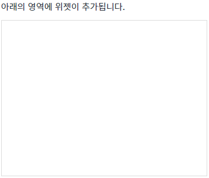
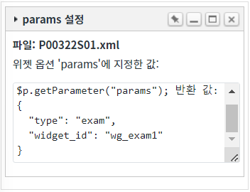

WidgetContainer의 함수 'addWidgets'로 위젯을 추가할 때, 위젯에 파라미터를 설정하고, 설정된 파라미터를 반환받는 예제입니다.
위젯 추가 시 파라미터 설정하기
Widget 화면에서 파라미터 반환받기
WidgetContainer 화면에서 파라미터 반환받기
STEP 1. 초기 상태를 확인합니다.
WidgetContainer에 추가된 위젯이 없습니다.
그림 1.브라우저(Chrome) 실행 예시

STEP 2. 파라미터가 설정된 위젯 추가하기
버튼 1. 위젯 추가하기 - 파라미터 설정을 클릭합니다.STEP 3. 실행된 결과를 확인합니다.
위젯의 타이틀이 'params 설정'인 위젯이 추가됩니다. 추가된 위젯 화면의 Textarea에 함수 'addWidgets'의 첫 번째 인자의 위젯 옵션 'params'에 설정한 값이 출력됩니다.(브라우저의 개발자 도구의 콘솔(console)탭에서도 확인할 수 있습니다)
그림 2.브라우저(Chrome) 실행 예시

로그
[05:21:28] # $p.getParameter("params"); 반환 값:
{
"type": "exam",
"widget_id": "wg_exam1"
}STEP 1. 초기 상태를 확인합니다.
버튼 1. 위젯 추가하기 - 파라미터 설정을 클릭하여 위젯 'params 설정'이 추가되어 있어야 합니다.그림 3.브라우저(Chrome) 실행 예시
STEP 2. WidgetContainer 화면에서 파라미터 반환받기
버튼 2. 위젯 'params 설정'의 파라미터 반환받기을 클릭합니다.STEP 3. 실행된 결과를 확인합니다.
함수 'addWidgets'의 첫 번째 인자의 위젯 옵션 'params'에 설정한 값이 로그확인 Textarea와 브라우저의 개발자 도구의 콘솔(console)탭에 출력됩니다.
로그
[05:32:22] # 스크립트 wgc_exam1.getWidgetById("wg_exam1").getParams(); 반환 값:
{
"type": "exam",
"widget_id": "wg_exam1"
}WidgetContainer의 함수 'addWidgets'를 이용하여 스크립트를 작성합니다. 함수 'addWidgets'의 첫 번째 인자에 위젯 정보가 담긴 JSON을 정의합니다. 첫 번째 인자 위젯 옵션의 'params'에 파라미터를 정의합니다. 세부 스크립트는 아래의 예시에 작성되어 있습니다.
스크립트
// 위젯 생성 옵션 정보 let widgetOptions = {}; // [필수] 위젯에 할당할 파라미터. // - Widget 화면(src)에서는 $p.getParameter("params")로 추출할 수 있습니다. // - Widget 객체에서는 함수 'getParams'로 추출할 수 있습니다. widgetOptions.params = { "type": "exam", "widget_id": "wg_exam1" }; // [필수] 위젯 ID. 동일한 ID를 가진 위젯이 있으면 추가되지 않습니다. widgetOptions.id = "wg_exam1"; // [필수] 위젯 파일 경로 widgetOptions.src = "/page/P00322S01.xml"; // [필수] scope 적용 여부로 true 고정 widgetOptions.scope = true; // [필수] 위젯 너비 : (설정 값 / WidgetContainer의 속성 'col'의 설정 값 * 100)으로 '%'단위로 그려집니다. widgetOptions.unitWidth = 1; // [필수] 위젯 높이 : (설정 값 * WidgetContainer의 속성 'unitHeightPixel'의 설정 값)으로 'px'단위로 그려집니다. widgetOptions.unitHeight = 10; // [권장] 위젯 타이틀 widgetOptions.title = "params 설정"; // 위젯의 x 위치 widgetOptions.x = 0; // 위젯의 y 위치 widgetOptions.y = 0; // WidgetContainer 'wgc_exam1'에 위젯 1개를 추가합니다. wgc_exam1.addWidgets(widgetOptions);
$p의 함수 'getParameter' 이용하여 스크립트를 작성합니다. 첫 번째 인자에 고정 값 'params'를 할당합니다. 세부 지정은 아래의 스크립트 예시에 작성되어 있습니다.
스크립트
// 예제 파일 '/page/P00322S01.xml'의 스크립트 'scwin.onpageload'에 작성되어 있습니다. // WidgetContainer의 함수 'addWidgets'의 첫 번째 인자의 위젯 옵션 'params'에 지정한 값 반환받기 let jsnParam = $p.getParameter("params"); // 반환 값 예시) // { // "type": "exam", // "widget_id": "wg_exam1" // }
WidgetContainer의 추가된 위젯 객체의 함수 'getParams'를 사용하여 구현할 수 있습니다. 위젯 객체를 반환하는 주요 함수는 다음과 같습니다.
getWidgetById: 위젯의 'id'를 받아 widget 객체를 반환
getWidgetByTitle: 위젯의 'title'을 받아 widget 객체를 반환
세부 지정은 아래의 스크립트 예시에 작성되어 있습니다.
스크립트
// WidgetContainer에 추가된 위젯의 ID가 'wgc_exam1'인 위젯 객체를 반환받습니다. let objWidget = wgc_exam1.getWidgetById("wg_exam1"); // 추가된 위젯이 없는 경우 메시지 처리. if (!objWidget) { alert("버튼 [1. 위젯 추가하기 - 파라미터 설정] 클릭 후 사용할 수 있습니다."); return; } // 위젯 객체에서 파라미터를 반환받습니다. // (WidgetContainer의 함수 'addWidgets'의 첫 번째 인자의 위젯 옵션 'params'에 지정한 값) let result = objWidget.getParams(); // 반환 값 예시) // { // "type": "exam", // "widget_id": "wg_exam1" // }
addWidgets( option )
option.params
getWidgetById( id )
[Widget Object].getParams()
$p.getParameter( param )
[웹스퀘어5 SP5 개발 가이드] WidgetContainer
링크 : https://docs1.inswave.com/sp5_user_guide/2059d4ce88b2fc16#6f01c6c535be09d8